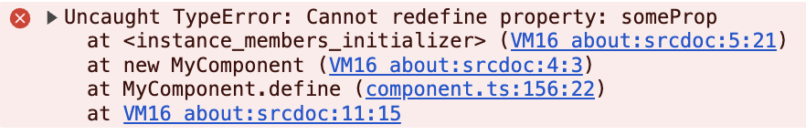

Published {% prettyDate date %}, {% readTime page %}
You can be a succesful dev in javascript land and not think about prototypes much at all. They are a quaint relic, an oddball basis for the pet scripting language written in a week for Netscape.
As I spend time working on architectural and library-based applications in
browser-land I find that prototypes and their advantages are being completely
forgotten. Typescript has nudged the great masses of javascript developers
into the habit of using a class. And unless you've been coding
for more than 8 or 9 years, you may have not known that classes were added
late to the language, and there was... something else that allowed
people to encapsulate data, create multiple similar instances, and provide
structures that could abstract your code.
I think this is a shame. I wonder often what life would be like if we stuck with prototypes and didn't get bullied into copying Java. Perhaps that alone would be a good post to write about.
My thesis in this post is that prototypical programming is dead. And it's so dead that specifications and the way the browser implements classes is making prototypes not even all the helpful to understand.
For the uninitiated, javascript was written with prototypical inheritance at its core. Instead of making a special template "cookie cutter" thing called a class, you would actually just use other objects as a template to re-use functionality.
It's quite brilliant, if you think about it. Why make a special entity apart
from objects? If you want a whole class of objects to have the same behavior,
point them to a single object called their "prototype." If you try to use a
method on the original object and the object doesn't have that method, it will
look at its prototype to see if that object has it, and if that one
doesn't, it will look at its prototype, and so on, until the method
is found. If it isn't, we get undefined back, because, well, that
thing was never defined in the prototype chain.
Here's an example where we make a Cat "class" using prototypes only.
This is extremely flexible, because you can more easily compose behavior. Want your objects to do X? Put X on its prototype object. Easy.
This also did something very nice regarding inheritance. You could avoid the diamond problem pretty easily by just being smart about mixing and creating your prototype objects.
Don't want to have to manually create a new object for every instance? Javascript had you covered. Every function is actually a constructor. If you attached a prototype to that function, you had yourselve a constructor with a prototype already attached to any instance you created.
So, normally for the "cat" example above, you probably would have this instead:
This is where Javascript's distinctive this comes in.
this is someting so uniquely javascript, that also could probably
be its own blog post. For this discussion, it's important to note that
this exists because when you're writing prototypes you need a way
to reference whatever object you're ending up on. And with Javascript, the
context of where functions are called changes all the time.
Why is this flexible? Well, if you want to share functionality, you just "mix it in."
There were many that weren't so happy with prototypes alone. This is understandable, because with the power of prototypical inheritance and mixing prototypes came great responsibility. It's hard to ensure that methods are on an object or its prototype chain if they could change at any moment at runtime.
One way to make this process a bit streamlined is to use classes. The way they're presented makes them seem like their behavior is set in stone and reliable. And this is very true in other languages that use class inheritance. So Typescript creates classes that transpile into javascript.
This is how it started: classes are just "syntactic sugar." You can write classes, and out comes typescript prototypes.
Here is a class in Typescript...
And here's how that's desugared into ES5...
As more and more features are added to javascript, it's harder and harder to maintain simple transpilation.
Decorators were added to Typescript in version 1.5 in 2015, and ever since
then you can enable them with the --experimentalDecorators flag,
even though today they're a totally legit typescript feature that's in no way
unstable.
They are still called "experimental" because there are competitors... kind of. Decorators have also been talked about in various forms in babel transpilation and natively in TC39 proposals. To support all these variations and new features being written into future spec proposals very smart people had to start making adjustments to how things in a class are transpiled.
In Typescript 3.7, the folks at Microsoft wrote an interesting explanation of why they were changing how class profields were transpiled.
In a nutshell, this is how Typescript (and many others) thought class fields would transpile:
When in reality, this is what needs to get transpiled
I actually can't tell you exactly why... but this is not the expected
behavior, at least, not if this were simple desugaring of prototypes. There is
something extra going on to accomodate classes. I think this mostly is a way
to define properties on the class that have an undefined value (the
uninitializedField.)
What's interesting is that today- this is how fields are initialized natively in the browser when using classes.
That's right, if you use a field in plain ol' javascript in the browser, it's actually applied to the constructed instance using defineProperty.
Why does that matter? Well, I ran into this error while working on my Minne library:
{% include "./example1.html" %}You will see this error in the console

It turns out that browsers interpret and run field initializers using
basically Object.defineProperty under the hood. When I try to run
my method for Minne, I'm also using the same method to set properties with
special functionality. It conflicts!
The solution is to run my Minne method in the constructor only... which is fine, but not as nice for the consumer. That means some fields are field definitions on the class, and some might be in the constructor.
{% include "./example2.html" %}This isn't just my problem though. If you look at the Lit documentation, they run into this same issue for intializing values on class fields
MDN explains how this is so under the hood, which leads to some unexpected behavior with invoking setters on a base class.
So here's a TLDR of this class fields thing:
Browsers are making native behavior with javascript classes that are not
intuitively mapped to javascript prototypes. If you were to be writing a
javascript prototype of the examples above, I think you would be
very surprised by the defineProperty native behavior.
I think for better or worse classes are the main entity now for abstractions and reuse, so the behavior under the hood does not have to be expected or consistent with prior prototype patterns.
Have you tried to make a custom element with just Javascript prototypes?
First off, we need to talk about how to subclass with prototypes, because to
make a custom element you are required to extend HTMLElement, and
you must call `super()` in the constructor.
Let's say that you have a Base prototype - Animal, and you want to extend off of that prototype. Let's make a Cat. First, what it looks like with classes.
Okay, fair enough. Now let's see what you need to do with prototypes. Conceivably, classes are just shorthand for the following:
Okay, so lots of code. And this prototype thing can be confusing if you're not used to it. I can see why people wanted to retreat to classes.
Now, let's try to make a custom element in prototype land. You do the exact same process as above...
{% include "./example3.html" %}We run into an error:
What the heck? HTMLElement can't be called like any other function?
It turns out that you can't. There are some "Functions" or classes like
HTMLElement that you can't call directly. When you try to
subclass with a prototype, and you call HTMLElement.apply(this),
you run into an issue where the constructor function can't be called. If you
try to use new and spin up a new HTMLElement like
the error suggest, you get a different error
So what is a web component connoisseur like us supposed to do if we want to do it with ES5, pre-class, prototypes? It turns out it's not possible in strictly ES5.
Reflect.constructWhat we need is a way to "extend" our prototype by constructing a new sub-class instance while maintaining the prototype link of the base class. This is actually just not possible pre-es6
What we need is a new feature housed in the Reflect API which was
included in ES6 and finalized in 2015
Reflect.construct Is basically the function that
performs new, and effectively allows us to do
super(). This is perfect for classes, because that's what
extends and constructor() do.
This is how we get around that issue of using HTMLElement as a function. This
is how we "call super" with prototypes. This is how we can extend
HTMLElement for custom elements.
So what am I trying to say? We're well past the world of prototypes.
If we're well past prototypes and not willing to risk using prototypes for fear of their dangers, I'm wondering if it's important at all that people dig into prototype intracacies. We can understand everything in terms of classes. I've always heard "it's good to learn about to understand what goes on under the hood" but it's actually way more confusing to look under the hood, and trying to model classes using prototypes is complicated. Why not just live in the world of that extra type abstraction of classes?
I asked someone to explain the difference between javascript class inheritance and java class inheritance, and they couldn't actually say that anything was different except that javascript has this prototype primitive that can be changed at run time, and Java class inheritance can't be changed at run time. Otherwise, for all intents and purposes, the inheritances, the methods, the class fields, behave nearly identically to other languages.
On a personal note, this makes me a little sad. The one distinct feature of javascript was this experimental mode of inheritance that allowed exceptional flexibility at runtime. I don't think we truly found the benefits of this extra flexibility, and most people just complained about its unfamiliarity instead of learning to use prototypes correctly. And now it's been eclipsed by a lumbering abstraction used by all the "big boy" languages.
This matters in a world where javascript is (practically and really) the only language for web apps
Oh well. There's always Rust. And maybe someday we can compile to web assembly?
I had to do a lot of research for this post and I probably made some mistakes. Let me know. {% socials %}